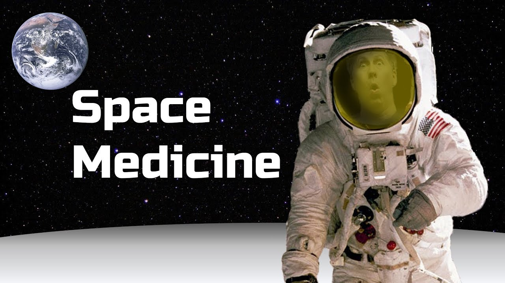
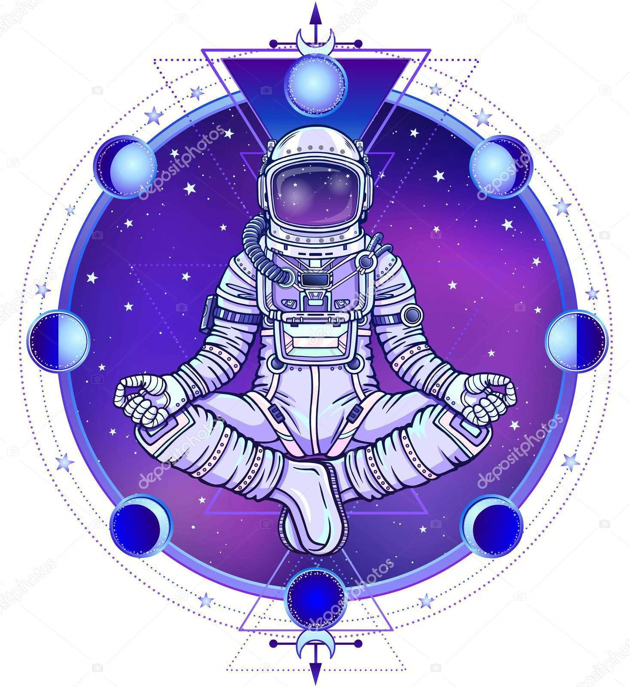
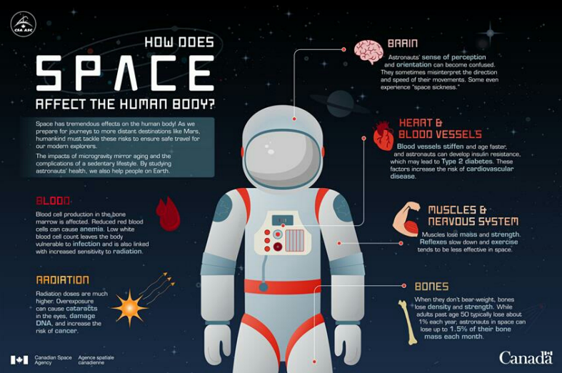

REMEDIES
The environment of space is lethal without appropiate protection: the greatest threat in the vacuum of space derives from the lack of oxygen and pressure, although temperature and radiation also pose risk. The effects of space exposure can result in ebullium, hypoxia, hypocapnia, and decompreeion sickness.
Crew members must exercise every day to prevent bone and muscle loss. Excercise in an important part of daily routne
Space Medicine
Traveling can be tough on the body. Think about driving all the way from, say, Washington to Wisconsin. By the time you ease yourself from behind the wheel, your back hurts, your eyes ache, your hands are cramped. And the farther you go, the more your body suffers. If you fly to France, you're hit by radiation. If you visit the space station, you lose gravity. Now imagine you're heading for Mars: low gravity, radiation exposure, a six month trip spanning millions of kilometers. Without some kind of "countermeasures" to protect you, your muscles will shrivel, your bones could weaken, your genes might be damaged and confused. When you arrive, you might find it hard to even get out of your spaceship without stumbling and hurting yourself.

Yoga for astronauts
Yoga Therapy as a Complement to Astronaut Health and Emotional Fitness – Stress Reduction and Countermeasure Effectiveness Before, During, and in Post-Flight Rehabilitation
Meditation for astronauts
If stress has you anxious, tense and worried, consider trying meditation. Spending even a few minutes in meditation can restore your calm and inner peace. Anyone can practice meditation. It's simple and inexpensive, and it doesn't require any special equipment. And you can practice meditation wherever you are — whether you're out for a walk, riding the bus, waiting at the doctor's office or even in the middle of a difficult business meeting. In isolation, we can journal to help regulate our emotions and reduce stress, be mindful of our strengths and share concerns. Meditation can be practiced nearly anywhere. We can also recognize the positive aspects of social isolation, such as providing more time for family and creative activities.

Aerobics for astronauts
In space, astronauts use three pieces of exercise equipment. Each piece does something different. The exercise equipment is put on raised platforms to reduce the noise the machines make.

